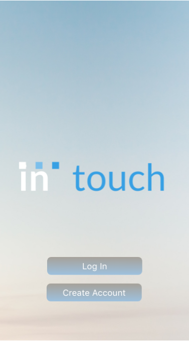
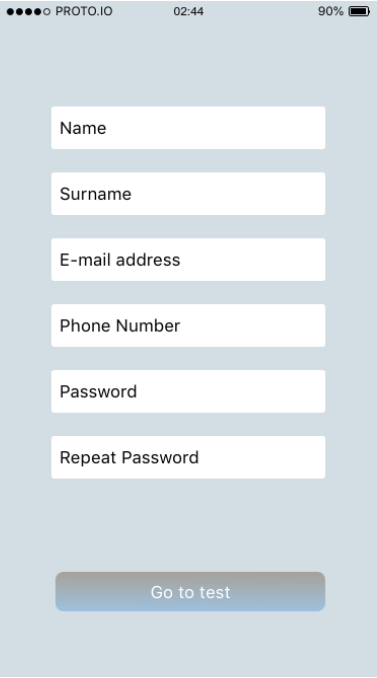
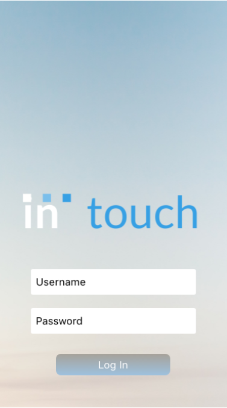

An application based on bringing isolated communities together in times of Covid
to improve mental health.
InTouch
Overview
Praesent ac adipiscing ullamcorper semper ut amet ac risus. Lorem sapien ut odio odio nunc. Ac adipiscing nibh porttitor erat risus justo adipiscing adipiscing amet placerat accumsan. Vis. Faucibus odio magna tempus adipiscing a non. In mi primis arcu ut non accumsan vivamus ac blandit adipiscing adipiscing arcu metus praesent turpis eu ac lacinia nunc ac commodo gravida adipiscing eget accumsan ac nunc adipiscing adipiscing.
Motivation
Nunc lacinia ante nunc ac lobortis. Interdum adipiscing gravida odio porttitor sem non mi integer non faucibus ornare mi ut ante amet placerat aliquet. Volutpat commodo eu sed ante lacinia. Sapien a lorem in integer ornare praesent commodo adipiscing arcu in massa commodo lorem accumsan at odio massa ac ac. Semper adipiscing varius montes viverra nibh in adipiscing blandit tempus accumsan.
Description
IN-touch is a mental health mobile app designed to provide users with an online platform for coping with loneliness and isolation inspired by the recent events related to COVID-19 restrictions. It is based on two main functions: the online community feature and the motivational feature.
-
Online Community
The app’s main purpose is to provide people who are in need of human contact with a channel to get in touch with others who may be in the same position as them. This would be of reciprocal help to both parties. To achieve this, our platform will feature the “Put me in touch” function, a chat/video conference tool which will randomly connect users to other online users and encourage them to start a conversation. To assist users with creating long-lasting bonds, it will be possible for them to save contacts and schedule further chats on a calendar feature.
In the spirit of creating a broad, accepting community hub for people to interact online, users will also be able to create groups with their saved contacts and schedule weekly, if not daily, video conferences. In-touch will not support groups of more than 8 members to encourage the creation of real bonds and true connection, which are less likely to develop in bigger, more dispersive online social gatherings.
Users will also be able to create their own personal profile within the app and will be asked to fill a simple survey on their interests and demographics. The data will be used to create suggestions meant to help each user find one or more compatible community group in case they were not interested in the more direct random chat function.
Motivational feature
Users will also receive notifications for daily goals and mental health activities. These will be tailored based on the information collected from the profile survey. The aim is to create small individual daily goals relevant to the user that will help them stay motivated throughout the day. Depending on each user’s profile, the app will offer a range of activities, from simple, light-hearted ones as creating fitness goals or walking their dog, to more complex ones, like meeting someone on the app and starting a new conversation.
It will also be possible for users to create their own goals, with the hope of encouraging them to stick to their daily commitment which is ultimately designed for them to get out of their isolation rabbit hole. Goals added by individual users will become part of our repository and, when appropriate, will be offered to other users with similar personality profiles.
Although we designed the motivational feature as one of the main functions of the app, it will be possible for users who are not interested to turn off daily notifications. Some users might be only looking for new connections and human contact, and we certainly would not want what can be seen as an ‘annoying’ notification to prevent them from doing that.
We understand that mental health issues can have very serious complications, and we are not trying to replace mental health professionals in any way. To avoid any misunderstanding, the app will provide links to external academic websites with reliable information about mental illnesses and, perhaps even more importantly, it will display the contact numbers of relevant mental health organisations around Australia (Mental Health Australia, MHFA, Sane and others). This will hopefully provide our users with the right tools to get in touch with a medical professional when in need.
We are also aware of the risks that an application allowing conferences and video conferences can imply. A strict Code of Conduct will be in place to protect users from inappropriate actions and behaviours while using this service. Users who will not comply with the rules will be banned from the app and will not be able to access the community again. Other users will be able to report misconduct via the report function in the chat menu, as a way to actively protect the safe bubble that this online community was conceived as.
You can have a glimpse of how the app would look like on this link: Mock-up



Tools & Tech
The program we are using to develop In-touch will be React Native. React Native was developed by Facebook Inc. In 2015 and is used by many company's including Facebook, Instagram, Discord and Skype. It is an open-source application framework development tool used to create applications on Android, Android TV, iOS, macOS, Web, Windows and UWP[1]. When deciding on how we wanted to build In-touch we had to decide on what type of application we wanted to develop, being either a web, native or a hybrid application, there are pros and cons to all but in the end a hybrid application seemed to be the best choice.
The deciding factors for us were; no browser is needed to run the application (a necessity for web applications), efficiency, allowing us to create applications for both android and iOS using Java for Android or Objective-C and Swift for iOS by writing out code once and hybrid applications also have access to the devices internal API’s meaning it can access features we need like the camera for video calls[2]. It also has a very large user base meaning there are plenty of tutorials and content to help us learn how to use it, one website we are all familiar with is W3schools.
As for the back-end of our application we will be using Firebase website.. The reason we have chosen this is for simplicity reasons, using a service like Firebase means we can focus on front end development while taking advantage of free server space (at least for development while there is minimal storage required) and not having to deal with any back end development. Firebase also offers cloud storage and cloud functions allowing the sharing of user-generated content like images, audio and visual, as well as a real time data base allowing the In-touch application to synchronise states across clients in real time and also offers authentication allowing the users to sign in with Google accounts[4].
In summary for us to create this application we will need to have installed React Native, Firebase and an integrated development environment (IDE) like eclipse. We will then need to create a new project on React Native and Firebase (we will need a Google account to do so), after doing this we then need to merge the project and may need to install some relevant Firebase dependencies.
Skills
Creating an app needs a competent and creative team that can work together effectively. There are many skills that are needed to take on this type of project. Mobile app development is a tough space and there are many skills that you need in your team before you take on the challenge.
1. Project management is needed for major liaising between the project team and client. They dig into the business and communicate that through to the team.
2. Business analysis is a skill that takes the vision that the client has set forth and mapping them toward development needs for the project team.
3. User interface and user experience are very important as it is the creation of how the app looks and feels.
4. Design refers to the overall feel of the app. Clients would not want an ugly app app and app icons. Customers want an app that looks appealing that provides a good experience and brings value.
5. Writing is a very important part of an app. The writing needs to be persuasive and include professional quality writing.
6. Communication is key with any team that works together. It’s important to have clear communication and have both speech and writing.
7. Performance testing is a crucial part for the ongoing viability of any app. There should be a strict development team that have strict methods in place for performance testing.
The remainder of skills are the ones that software engineers should bring to the team:
8. Modern coding languages such as HTML5, Java, C++, Objective-C, Swift, and C#. Not all of them need to be used of course, but they should be skills in one or more of them.
9. Cloud infrastructure is a very important part of app development and many other types of development. The team should be skilled in Microsoft Azure and Amazon Web Services to deploy and manage applications and services.
10. Cross-platform capabilities are an important aspect of developing an app. You might start your app on Android, iOS, or Windows, but any successful app will eventually work on all platforms.
11. Data expertise is needed with apps that collect data and recognise results. Data engineers create efficient databases and repositories to create a smoother and better performing app.
12. Integration with cloud-hosted systems like Amazon web services have grown large and versatile. App might want to push data into these systems to draw data out.
13. Security is definitely an important part of any tech development company. There will always be some risk and minimising the risk is important. You can never be too safe online.
Outcome
Blah Blah Blah.
Citations
Tools & Tech
[1]"React Native", En.wikipedia.org, 2020. [Online]. Available: https://en.wikipedia.org/wiki/React_Native. [Accessed: 15- Oct- 2020].
[2]2020. [Online]. Available: https://www.youtube.com/watch?v=ZikVtdopsfY. [Accessed: 17- Oct- 2020].
[3]2020. [Online]. Available: https://www.youtube.com/watch?v=q5J5ho7YUhA. [Accessed: 17- Oct- 2020].
[4]"Firebase Products", Firebase, 2020. [Online]. Available: https://firebase.google.com/products#develop-products. [Accessed: 17- Oct- 2020].